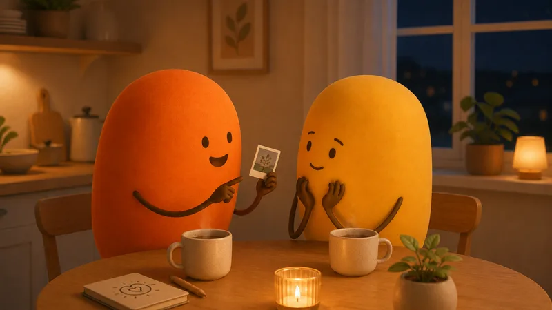

There is a moment, somewhere in every long relationship, when something funny happens at work and you reach for your phone, and then you pause.
It's a small story. It's not important. They're busy. You'll forget it by dinner anyway.
That pause, multiplied by a few hundred, is how the closest thing two people share quietly thins out. Psychologists call the thing emotional intimacy. In real life it looks like still wanting to tell them the small story, and trusting that the story has somewhere to land.
What emotional intimacy actually is
Strip the term to its working parts and you get two: openness and reception. One person risks a true thing, small or large, and the other person catches it. That's the whole machine.
Notice what it is not. It is not constant deep conversation; some of the most emotionally intimate couples talk mostly about groceries and shows, but the channel is open, and both of them know it. It is not the same as physical closeness, which can run on a completely different track. And it is not about volume of time, a thing couples sharing a sofa every night can be entirely without.
The diagnostic is simple. When something true happens inside you, does it occur to you to bring it to them? Joy, dread, a weird dream, a small shame. If the answer is mostly yes, the channel is alive, whatever your schedules look like.
How it erodes (nobody decides anything)
No couple decides to stop being close. The channel narrows by reception failures, each one too small to mention.
A story gets told to the top of someone's head while they scroll. A worry gets answered with a fix when it wanted company. An excitement gets a flat "nice" because the listener was somewhere else entirely. None of these are crimes. Every relationship contains thousands.
But the teller's nervous system keeps the receipts. Researchers who study couples, John Gottman most famously, call these small offers bids: tiny invitations to connect, dozens per day, each one accepted, missed, or turned away. Couples who thrive catch most of them. Couples who drift don't, and the bids slowly stop being sent.
That's the quiet ending nobody narrates: not a fight, just two people who gradually stopped offering each other the small stuff, until the inner lives ran in parallel and the conversation became logistics.


Something small is in the works
We're quietly making something for the two of you. Leave your email and we'll surprise you when it's ready.
No spam, no newsletter. One good email when it’s ready.
Signs it needs tending
- Your answer to "how was your day?" has been one word for a while, and so has theirs.
- You find yourself saving real conversations for friends, a sibling, or the group chat.
- You know their calendar but not their current worry.
- Big feelings get processed alone first, and they receive the press release.
- The pause before sharing: you weigh whether a thing is worth saying, and it usually loses.
- Nothing is wrong, and you miss them anyway, sometimes from the same room.
If a few of these landed, nothing here is broken. This is the most common drift in long relationships, and unlike many problems, it responds almost immediately to tending.
How it rebuilds, in minutes
Trade answers, not status reports. Replace one "how was your day / fine" exchange with an actual question: what was the best part, the strangest part, the part you almost texted me about. Then the crucial step: follow up once. The follow-up question is where the other person learns you actually wanted the answer.
Catch the next bid with both hands. For one week, treat every "look at this" and "you won't believe what happened" as what it is: an invitation. Phone down, face up, thirty seconds of full reception. This single habit, per the research above, outperforms nearly everything more elaborate.
Go first with something small. If the channel has been quiet, someone has to reopen it, and announcements don't work. A small true disclosure does: a worry, a memory, a thing you're embarrassed to be excited about. Intimacy is contagious at exactly this dosage.
Protect twenty minutes, most days. Not a summit. A walk, a coffee, the dishes done together, phones elsewhere. Attention is the carrier wave for everything in this article, and our guide to the quality time love language covers its mechanics.
Intimacy returns the way it left: through small exchanges, not summit meetings.
For your next conversation
- "What's something small from this week you didn't bother telling me? Tell me now."
- "When do you find it easiest to talk to me, and when is it hardest?"
- "What's something on your mind that isn't a problem to solve, just a thing to say?"
The small story from work, the one that wasn't important enough to send: that was never about the story.
It was a knock on the door, checking whether anyone still answers. Keep answering, and you will never have to rebuild anything.
Send the story.
Questions couples actually ask
What is emotional intimacy in a relationship?
The felt sense that your inner life is welcome with this person: the small stories, the half-formed worries, the unflattering feelings. Psychologists define it as mutual openness plus responsiveness. In real life it looks like still wanting to tell them the small story from your day.
Can you love someone and lack emotional intimacy?
Easily, and many couples do. Love is the bond; intimacy is the bandwidth. Two people can be deeply committed while sharing almost nothing of their inner lives, usually after years of small stories that found no landing. The love makes it worth rebuilding; it doesn't rebuild it by itself.
How do you rebuild emotional intimacy?
Smaller than you think and more often than you think. Trade real answers instead of status reports, receive small disclosures well, and protect a few minutes of undistracted attention most days. Intimacy returns the way it left: through tiny exchanges, not summit meetings.
What kills emotional intimacy fastest?
Bad receptions. Every time a small disclosure gets a distracted "mm", a fix nobody asked for, or a joke at its expense, the teller learns to share less. Phones get blamed, and they matter, but the deeper killer is what happens in the three seconds after someone risks a real sentence.
Something small is in the works
A little surprise for couples is in the works. Be the first to know.
No spam, no newsletter. One good email when it’s ready.